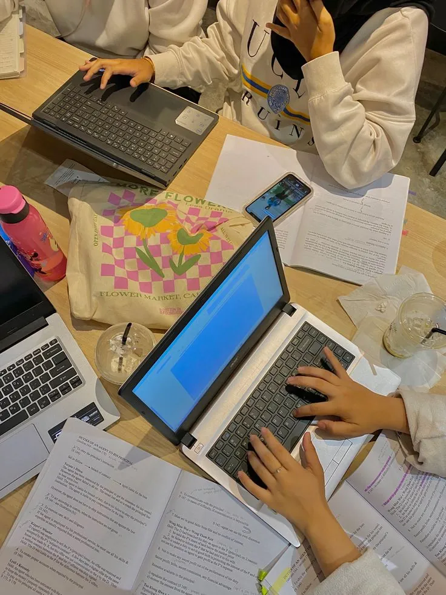
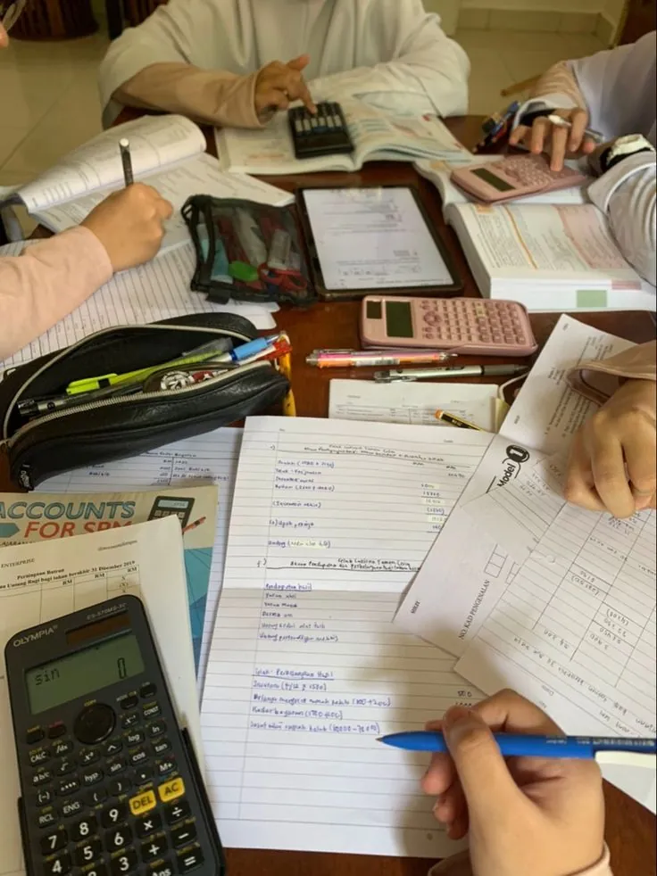
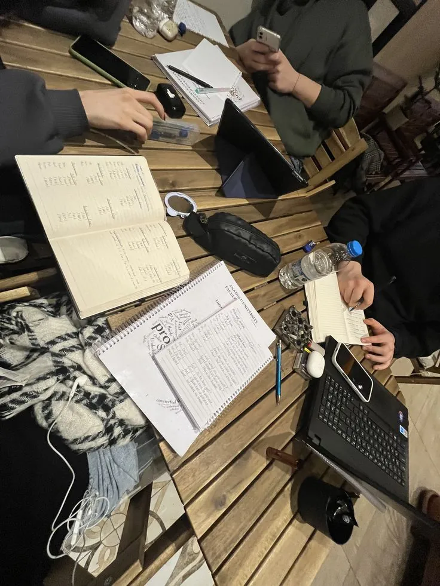

Mempersiapkan siswa menjadi pembelajar kritis, kreatif, dan mandiri melalui kurikulum komprehensif berstandar nasional dan global.
MAN 2 Kota Tasikmalaya memberikan kebebasan eksplorasi bagi siswa untuk mendalami bidang keilmuan yang diminati.

Fokus pada pendalaman Fisika, Kimia, Biologi, Matematika Lanjut, dan Coding/Robotika. Dirancang untuk calon ilmuwan, dokter, dan insinyur masa depan.

Mendalami Ekonomi, Sosiologi, Geografi, Manajemen Keuangan, dan Entrepreneurship. Mempersiapkan pemimpin bisnis, diplomat, dan analis sosial.

Penguasaan Bahasa Inggris, Bahasa Jepang, Bahasa Mandarin, Sastra, dan Diplomasi Internasional (Model United Nations).
Metode pengajaran yang mengedepankan pengalaman langsung dan pemecahan masalah.
Siswa menyelesaikan proyek nyata interdisipliner untuk melatih kolaborasi dan manajemen waktu.
Kombinasi Science, Technology, Engineering, Arts, dan Mathematics dalam kurikulum terpadu.
Setiap siswa didampingi oleh guru pembimbing akademik untuk memantau progres dan minat karir.
Penggunaan Learning Management System (LMS) modern untuk penugasan, modul digital, dan tes interaktif.
Wadah pengembangan minat, kepemimpinan, seni, olahraga, dan teknologi.
Mempelajari mekanik, elektronika sensor, dan algoritma AI untuk kompetisi robotika internasional.
Latihan fisik, taktik tim, dan turnamen olahraga antar sekolah di bawah bimbingan pelatih bersertifikat.
Meningkatkan keimanan, memperdalam ilmu agama, dan membentuk karakter islami melalui kegiatan keagamaan.
Menghafal Al-Qur'an, memperdalam ilmu tajwid, serta membentuk generasi Qur'ani yang berakhlak mulia dan cinta Al-Qur'an.
Pembentukan kedisiplinan, ketangkasan bertahan di alam, jiwa sosial, dan pertolongan pertama medis.
Melatih liputan berita, fotografi jurnalistik, videografi kreatif, dan manajemen media sekolah.
Penelitian sains, eksperimen inovasi lingkungan hidup, dan publikasi jurnal remaja berprestasi.
Pembinaan seni bela diri, kesehatan mental, kebugaran fisik, dan raihan medali kejuaraan daerah.